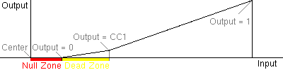

The libjsw system is a methoid for UNIX programs to interact with the joysticks and other game controllers using a standardized methoid of input and output.
The libjsw system consists of a library (libjsw) and
supporting programs such as jscalibrator that interact with
the libjsw system at the library level.
This makes possible, a common set of calibration and correction values for all programs that use libjsw. There is also a version of libjsw for Win32, enabling UNIX programs that use libjsw to be portable to Windows.
The libjsw system uses the following terms to describe calibration.
/dev/js# where # is a number. For
USB joysticks, the notation is /dev/input/js#. Note that
these device name notations match Linux device file paths for
joysticks.
libjsw calibrates joysticks using jscalibrator or any
compliant supporting software. See How To
Calibrate for instructions on using jscalibrator to
calibrate your joysticks.
Calibrated joystick values are usually stored in the file
.joystick located in the user's home directory. If you do not
have this file then you should run jscalibrator to calibrate
your joysticks for the first time. The Win32 version of libjsw stores the
calibration in the file C:\WINDOWS\LIBJSW.INI
When a program that uses the libjsw library runs and decides to open a joystick using the libjsw library, libjsw first checks for the calibration file and if it exists it will be loaded along with the joystick that the program wants to open. The program can then request values from the joystick through libjsw, libjsw can give either raw joystick values or calibrated corrected output values (whichever the program wants).
Note that libjsw cannot provide calibrated and corrected output if the calibration file does not exist. Remember to calibrate your joystick(s) first, before running any program that uses libjsw. You may also need to calibrate your joysticks periodically from time to time, since the mechanical parts within a joystick may errode with time and use.
To learn how to write your own programs to use libjsw, see man
JSIntro or visit the libjsw home page at
http://wolfpack.twu.net/libjsw
The libjsw system offers several layers of advanced error correction.
When correction level is set to level 1 or higher, libjsw
will take input values from the physical joystick and give corrected
output values for functions JSGetAxisCoeff() and
JSGetAxisCoeffNZ() (see man JSGetAxisCoeff
for programming information).
The correction that libjsw performs on the pipeline is as follows:
The above are generalized outlines of what to expect with corrected values, they do not represent the exact equations used by libjsw (inquire with authors about that).
Below is a graph that represents the input versus output values using error correction with a defined null zone and dead zone.
| libjsw is Copyright © 1997-2005 WolfPack Entertainment |